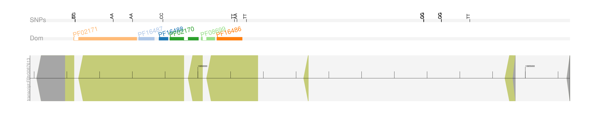

geneplot tutorial
This document describes an example of usage of the Python geneplot library. Input data are located in the “tests” folder of the source code at GitHub, including:
1- (optional) An VCF file with polymorphisms identified on the genome of Drosophila melanogaster, downloaded from https://doi.org/10.5281/zenodo.51693.
Verify that the input VCF file complies with standard specifications (https://github.com/samtools/hts-specs). There are several file verifiers available elsewhere. The name of the sample on the VCF file must be set accordingly, i.e., at the end of the header line which describes the names of the columns of the VCF file, typically the last one. See the “w79_w11182w79_UPD” sample name in the next figure of the example data:
##fileformat=VCFv4.1
[HEADER LINES]
#CHROM POS ID REF ALT QUAL FILTER INFO FORMAT w79_w11182w79_UPD
2L 13247 C T 146819 PASS GT:AD:DP:FT:GQ:PL 1/1:0,3:3:PASS:9:128,9,0
2L 26706 GT G 113317 PASS GT:AD:DP:GQ:PL 1/1:0,5:5:15:153,15,0
2L 47355 GT G 166497 PASS GT:AD:DP:GQ:PL 1/1:0,5:5:15:179,15,0
2L 58166 T C 150891 PASS GT:AD:DP:GQ:PL 1/1:0,10:10:30:0,0,1800
2L 66908 G A 157170 PASS GT:AD:DP:FT:GQ:PL 1/1:0,39:7:PASS:24:0,54,273
2L 66910 A G 155506 PASS GT:AD:DP:FT:GQ:PL 1/1:10,0:8:PASS:24:348,24,0
2L 67241 A G 154579 PASS GT:AD:DP:FT:GQ:PL 1/1:0,6:6:PASS:18:248,18,0
2L 67497 T C 152461 PASS GT:AD:DP:FT:GQ:PL 1/1:12,0:4:PASS:12:0,12,1132
Currently, only single-sample VCF files are accepted by the geneplot library. If you have a multi-sample VCF, you split it with VCFtools or BCFtools.
2- (mandatory) A GFF file (version v.3) of the annotation of the genome. Verify that the file complies with the standard specifications (https://github.com/The-Sequence-Ontology/Specifications/blob/master/gff3.md). GFF3 validation tools are available at modENCODE-DCC (https://github.com/modENCODE-DCC/validator).
3- (optional) The output file of InterproScan, which identifies several protein signatures on protein sequence data, in TSV format.
Example 1.
We are going to plot protein domains and SNP data on one ARGONAUTE gene (ID FBpp0086739) of the fruit fly. According to the GFF3 file, the gene has associated the protein ID FBpp0086739. We first instantiate a gene object by using these data as parameters of the gene() class of the library, as well as the path were VCF files are located. Next, we set the sample ID with the SNPs we want to plot and the protein signature database to be used as parameters of the plot() method of the gene object we have created.
import geneplot as gp
#input data
filegff = '/path-to-data/file.gff'
fileipr = '/path-to-data/file.ipr'
filevcf = '/path-to-data/vcfs/'
# class instantiation (gene object)
gene1 = gp.gene('geneID', 'proteinID', filegff, fileipr, filevcf)
# plot
gene1.plot('sample_ID', 'Pfam')
The method uses Pfam database as default. After the first plotting, a list of available database signatures for that gene is printed, in case additional plots are desired. This is the Output image of the example:
Since SNPEff annotation is not provided in the VCF file for this sample, SNPs are plotted in black color.